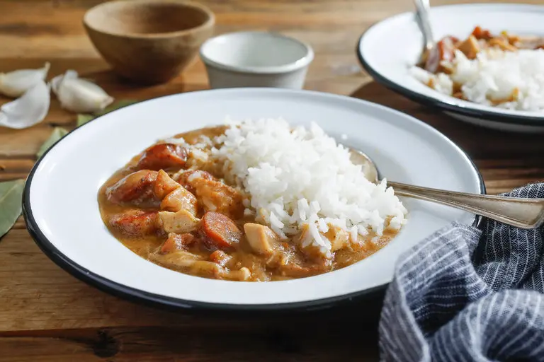

Chicken Andouille Gumbo

Description
Gumbo is a hearty, rich Creole stew generously seasoned with black and white pepper, cayenne, paprika and filé powder,
a spice made from the leaves of the sassafras tree. Filé powder is readily available in most grocery stores and online,
and while it's not 100 percent necessary, it lends a distinctive, earthy quality to the dish.
Ingredients
- 3lbs of chicken cut into serving pieces
- salt to taste
- 1 tsp black pepper
- 1 1/4 tsp white pepper
- 1 tsp mustard powder
- 1 1/2 tsp cayenne pepper
- 1 1/4 tsp paprika
- 1 tsp granluated garlic
- 1 tsp file powder
- 1 1/2 cup flour
- 2 1/2 cup vegetable oil
- 3/4 cup finly chopped onion
- 3/4 cup finly chopped green bell pepper
- 3/4 cup finly chopped celery
- 9 cups chicken broth
- 2 cups chopped Andouille sausage
- 1 bay leaf
- 2 cloves minced garlic
- 2 cups cooked rice
Directions
- Mix salt, pepper, mustard, cayenne, paprika, granluated garlic,and file powder
- put chicken in a bowl and rub 4 tsp of the spice mixture into the chicken
- put flour into a bowl and mix 2 tsp of the spice mixture into the flour
- heat and add oil to 10 inch skillet dredge chicken in the flour to coat well shaking off excess save leftover flour
- when oil is hot and almost smoking add chicken skin side down and cook for 2 minuites until golden brown.
flip and cook for an additional 3 minuites. do this in batches as to not overcrowd the pan. let drain thouroughly on paper towels
- drain all but one cup of fat from the pan and add all remaining flour stir constantly with a wire whisk
until the flour oil mixture is a deep brown but not burnt to make a good roux
- add chopped onion celery and peppers stir to blend in with the roux
- in a seperate saucepan bring the chicken broth to a boil
- add the roux to the chicken stock half a cup at a time while constantly stirring with a whisk
- add smoked sausage and cook on high heat and stir from the bottom often for about 15 minuites
- add chicken pieces, bay leaf, minced garlic cook on medium low for ~40 minuites
- remove chicken and cut the meat from the bones shred it and add back to the pot
- serve with white rice spooned into the gumbo
<- Back